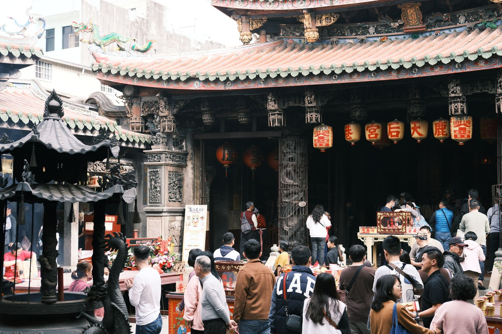

타이중 루강 버스 9018, 어디서 타고 얼마일까?
타이중역에서 루강 옛거리까지 — 중록커윈 9018 타는 곳과 요금, 국도버스 규칙만 골라 정리했습니다.
게시
“타이중에서 루강은 버스로 어떻게 가죠?” 중록커윈 9018은 타이중역(푸싱로)과 루강을 국도 1호선으로 잇는 국도버스예요. 공로총국 운임과 애버스 노선 안내(2026년 10월 기준)를 바탕으로 정류장·요금·탑승 규칙만 정리해봤어요.
01 · 한눈에 비교하기
| 구분 | 타이중역→루강 | 차오마→루강 |
|---|---|---|
| 운영 | 중록커윈(中鹿客運) 9018 | 같은 노선·일부 편은 차오마 출발 |
| 일반 요금 | NT$96 (2026년 10월 기준) | NT$70 (2026년 10월 기준) |
| 할인 요금 | NT$48 (2026년 10월 기준) | NT$35 (2026년 10월 기준) |
| 결제 | 현금·이지카드·아이패스·아이캐시 | 동일 |
| 성격 | 국도버스(고속 진입 전 승차만) | 국도 하차 후 정류장은 하차만 |
공로총국(公路總局) 운임 조회와 애버스(愛巴士) 노선 안내를 기준으로 정리했습니다. 원글에 나오던 ‘약 38원’ 같은 숫자는 공식 일반·할인 요금과 맞지 않아 넣지 않았어요.
02 · 어디서 타면 될까
타이중역(푸싱로) 정류장 공식 표기는 臺中車站(復興路)예요. 역 주변 푸싱로 쪽 국도버스 정류장에서 탑니다. 방문 전 구글맵이나 버스 앱에서 ‘9018’·‘臺中車站(復興路)’로 위치를 확인하세요.
시내 경유 정류장 간청(干城站)·민권계광가 입구·타이중교육대학·과학박물관(타이완대로)·MRT 시정부역·신광싼웨·차오마(타이완대로) 등을 지나 국도에 올라가요.
루강 쪽 하차 동팡초등학교·난안리·후비푸·치거우쯔·푸싱향 공소·옛 타이탕 기차역·루강진 공소·루강역 순으로 내려요. 2026년 8월 4일부터 루강 민권로 공사로 루강진 공소·옛 타이탕 정류장은 우회 운행 중일 수 있으니, 당일 공지를 확인하는 편이 좋아요.

03 · 요금·카드·국도버스 규칙
공식 운임(일반) 타이중역→루강역 NT$96, 타이중역→루강진 공소 NT$92, 차오마→루강역 NT$70이에요(2026년 10월 기준, 공로총국 운임 조회).
할인 운임 같은 구간 할인은 타이중역→루강역 NT$48, 차오마→루강역 NT$35 수준이에요. 적용 대상은 현장·카드사 기준을 따르세요.
교통카드 이지카드·아이패스·아이캐시로 낼 수 있어요(애버스 안내).
국도버스 탑승 규칙 고속도로에 오르기 전 정류장에서는 승차만, 내려온 뒤 정류장에서는 하차만 할 수 있어요. 짧은 시내 구간만 가려면 시내버스를 타는 것이 맞습니다.
04 · 시간표와 당일 확인
월~목·금요일·주말·공휴일 시간표가 따로 있어요. 월~목 타이중역 출발은 대략 06:00부터 22:00까지 하루 여러 편이고, 금요일 일부 편은 차오마에서 출발하기도 합니다. 배차와 우회는 바뀔 수 있으니 출발 전에 애버스 9018 노선이나 교통부 TDX 기반 버스 앱에서 당일 시각을 확인하세요.

국도버스는 ‘타기만 / 내리기만’ 구간이 나뉘어 있어요 — 시내 한두 정류장만 가려다 잘못 타면 헷갈리기 쉽습니다.
루강에서 내려 맛집을 찾거나, 타이중으로 돌아와 저녁을 이어가려면 타이중 맛집 지도와 타이중 대만식 맛집, 타이중 빙수를 함께 보면 동선이 잡히기 쉬워요. 스쿠터를 빌릴지 고민 중이면 타이중 스쿠터 렌트 면허·보험 가이드도 참고해 보세요.
지도에서 타이중·루강 근처 맛집 준비하세요
버스에서 내린 뒤 바로 갈 대만식·빙수·카페를 미리 찜해 두면 동선이 편해져요.